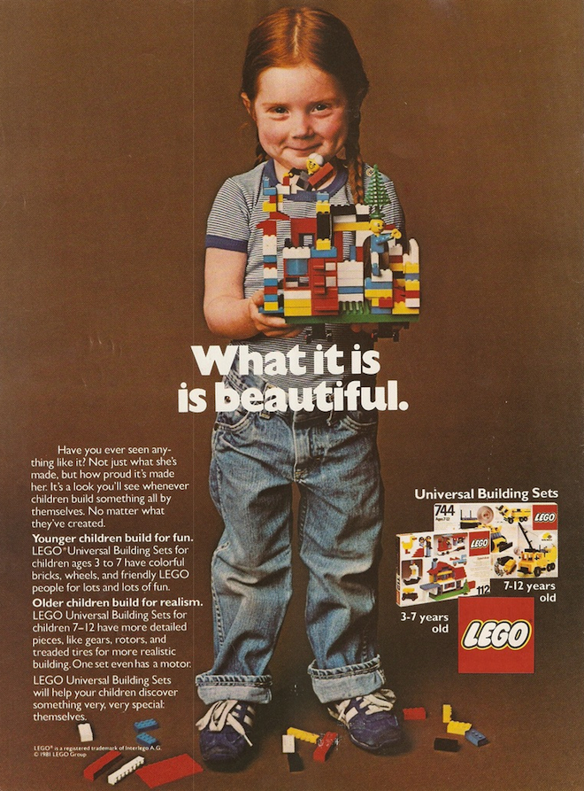

Why Web Literacy?
Last week, Mark Surman (director of the Mozilla Foundation) posted an article titled, "I need help explaining 'why?'" In it, he roughed out a five liner to explain why Mozilla cares so much about web literacy:
- Our goal: help 100Ms more people become makers who understand and tap the full power of the web.
- Why? The web has fueled massive creativity, productivity and wealth. We want this to continue.
- When the web was young: people looked under the hood, figured out how it worked and made things.
- This 'just figure it out and make it' is harder to come by today. The hood is harder to open. Learning as you go is not so easy.
- Mozilla want to turn this upside down. We want to make it easy easy to open again, to learn how things work and to tap the full power of the web.
I've been trying ever since to find a quotation from one of the civil rights leaders of the 1950s (I thought it was Septima Clarke), who said, "We're not going to change the world by teaching these people how to read–we're going to change it by teaching them how to write." What I found instead was something from Matthew Crawford's thought-provoking (and sometimes infuriating) Shop Class as Soulcraft:
We in the West have arranged our institutions to prevent the concentration of political power… But we have failed utterly to prevent the concentration of economic power, or take account of how such concentration damages the conditions under which full human flourishing becomes possible… Too often, the defenders of free markets forget that what we really want is free men.
Crawford believes that removing the experience of working with things from everyday life hasn't just deskilled us; it has demoralized us. Modern knowledge workers are just as alienated from their labor as any other assembly line worker; the gradual substitution of process for judgment is only "progress" if pride in one's work and connection with one's peers is left out of the equation.
He is most definitely not playing the "dignity of manual labor" horn blown by the Arts & Crafters or back-to-the-land dreamers: he is coolly scathing when discussing their cuddly inanity. But he makes a convincing case that skilled trades are not only better paid and steadier occupations these days than most so-called "knowledge work", they also demand more intellectually, and more personally rewarding.
That, for me, is what we're really fighting for. Making "hands-on" part of everyday life once again will, I hope, help children (and grownups) learn perseverance, curiosity, conscientiousness, optimism, and self-control. It's also my answer to the big question Mark asks at the end of his post:
[H]ow do we deal with the YouTube/Facebook factor? I.e. people are already 'making stuff' on social media. What are we talking about that is different? What does ‘the full power of the web' really offer?
If you give a five-year-old a LEGO Avengers set that can only be put together in one "right" way, you're teaching her that someone else gets to decide what she should do with her imagination. If you give her a box full of parts, you're doing this:

You see that smile? My daughter's never going to that proud of "personalizing" her home page using one of a dozen canned themes that someone else put together. And you see the title over the box, on the right? It says "Universal Building Sets". That's our web, and that's what we're fighting for.